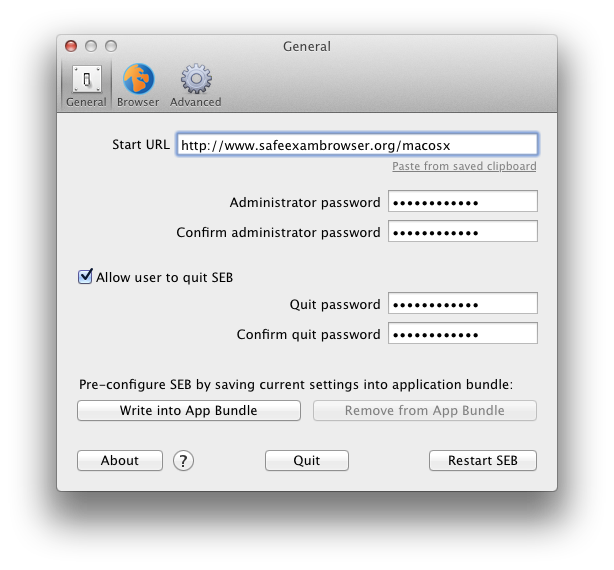
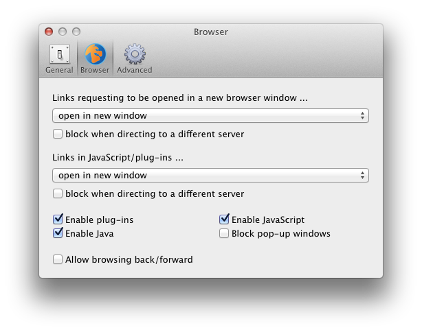
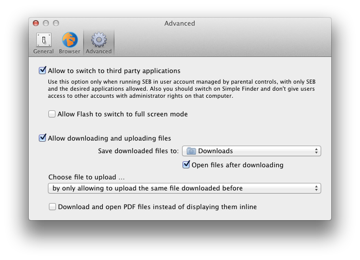

Manual for the current version of Safe Exam Browser
Safe Exam Browser – SEB for macOS opens a web browser window without navigation elements and locks the computer into a kiosk mode, which prevents switching to other applications or quitting SEB untimely. Currently SEB directly supports the wide spread learning management systems Moodle and ILIAS, although it can easily be connected with most other web-based online quiz and e-assessement systems.
SEB disables the macOS Dock, the process switcher (cmd+Tab/cmd+Shift+Tab), menu bar, the Force Quit window (cmd+opt+esc), normal reboot (ctrl+cmd+eject), normal shutdown (ctrl+opt+cmd+eject), hiding the application, printing and Exposé. Display and system idle sleep is also prevented while SEB is running. It can also be set whether users can quit SEB and if it is required to enter a quit password to do so.
In the browser window there is no right mouse (or ctrl-) click popup window available, links requesting to be opened in a separate window can be set to be blocked generally, to open in the same browser window or in a new SEB window. Besides that, the browser is supporting Quicktime, Java and Flash content (as long as the required Flash plugin is installed on the system). Hyperlinks and links embedded in Javascript, in Flash and other plugins requesting to open in a new window can optionally be ignored when they link to another host than the one of the current page.
SEB detects when it was started in a virtual instead of a native environment and refuses to run. This virtual machine detector hinders manipulating SEB further when used in unmanaged environments.
SEB for Mac OS X is based on the WebKit browser engine, which is also used by Safari, Apple Mail and many open source browsers like Google Chrome (in contrast to the Mozilla Firefox/XULRunner/Gecko engine used by SEB for Windows). There are some small differences and issues regarding rendering of web pages and some content in ILIAS and Moodle, so you should check all functionality of your quiz in SEB for Mac OS X before using it in exams.
SEB for Mac OS X can be used together with additional (third party) applications during an exam. You can download and open files linked in your online exam, edit it in a third party application and then upload the results to your online quiz/LMS again. For this case and high security use in exams, the current version of SEB for Mac OS X should be used in a managed environment. See below under which circumstances you can achieve a quite secure environment.
You can download the DMG disk image file here. If it doesn't get mounted, just double click on the downloaded file. Then you can drag the SEB application to the Application Folder or any other location on your computer. It is also possible to run SEB directly from the mounted disk image or from a network volume.
When you start SEB, all currently running applications are hidden and all attached screens are covered with a black background. On the main screen SEB opens its web browser window filling the whole screen (the window can be resized and moved nevertheless). SEB opens the webpage at the preset Start URL, which might take some seconds. As default, as long as you don't set another Start URL (see Configuration), SEB for Mac OS X opens the project web site displaying this documentation. Also a window will be displayed about how to quit SEB and how to access preferences as long as you don't change some settings in preferences.
SEB doesn't have any navigation buttons, but if this has been enabled, you can use cmd+Cursor Left to go back in the browser history and cmd+Cursor Right to go forward in history. Cmd+R reloads the current page.
To quit SEB (while it's using the default settings), just press cmd+Q or the red close button in the browser window. Quitting SEB can be switched off or password protected in the Preferences window. When SEB quits, the applications which were visible before starting it will get unhidden again.
SEB for Mac OS X has a comfortable preferences window build in which can be used for configuring SEB. After you start SEB, press the F3 and F6 keys (on modern Mac keyboards you also have to hold the fn key).

In the preferences window you can set the following parameters:
Settings in General Pane
- Start URL: Full URL (starting with http:// or https://) of the page to open when SEB is started.
- Paste from saved clipboard: SEB saves the content of the clipboard (if it's a text string) when starting up and before clearing the clipboard. Use this link to paste the saved string to the Start URL field.
- Administrator password: Password required to enter the preferences window. It's recommended to set one!
- Confirm administrator password: Retype the administrator password. As long as it's not matching the administrator password typed in the field above, Passwords don't match is displayed below and you cannot save the preferences.
- Allow user to quit SEB: If selected, Users can quit SEB with cmd+Q. Otherwise you can shutdown or reset the computer or use the Quit button in this preferences window. In a computer room in a university or school you could for example use some tool to shutdown or reboot all computers after a exam and therefore not allow students to quit SEB themselves at all.
- Quit password: This password is prompted when users try to quit SEB with cmd+Q or the red close button in the browser window. If no quit password is set, then SEB just prompts Are you sure you want to quit SEB?
- Confirm quit password: Retype the quit password. As long as it's not matching the quit password typed in the field above, Passwords don't match is displayed below and you cannot save the preferences.
- Write into App Bundle: Saves current settings into the Safe Exam Browser application bundle to pre-configure SEB. Then this copy of SEB will always use those settings after starting up. This only works if you have write access to the directory SEB is in, so you might have to copy or move SEB to another directory before using this feature. A dialogue window will inform you whether writing settings to application bundle succeeded or not.
Please note: This feature is not available in the Mac App Store version of Safe Exam Browser due to restrictions from Apple and because it doesn't make much sense for the software deployment scenario of the App Store. In the next major release of SEB there will be a App Store compliant possibility of pre-configuring SEB.
- Remove from App Bundle: Remove settings from the Safe Exam Browser application bundle, then user defaults from the user's Library/Preferences folder will be used again. This button is only enabled when there are actually settings saved in the app bundle.
- About: Shows a window with copyright information and the version number of the SEB you're running. Click somewhere into the window to close it.
- Help-Button "?": Displays this manual page in the browser window. Preferences stay open, if they get hidden behind the browser window, you can access them by pressing the same keys like mentioned before.
You can get out of the preferences windows using one of the three buttons below:
- Close window (standard control in the windows title bar): Accepts preferences and closes window. If you changed start URL, SEB will be restarted to display the new page.
- Restart SEB: Saves preferences and restarts SEB, displaying the webpage at start URL.
- Quit: Saves preferences and exits SEB.

Settings in Browser Pane
- Links requesting to be opened in a new browser window ... This popup list offers three policies:
- get generally blocked
- open in same window: This was the behaviour in SEB for Mac OS X versions before 1.5.
- open in new window
- Block when directing to a different server: Hyperlinks which direct to a different host than the one of the current page will be ignored.
- Links in JavaScript/plug-ins ... This popup list offers three policies for hyperlinks opened from JavaScript or plug-ins (like Flash):
- get generally blocked
- open in same window: This was the behaviour in SEB for Mac OS X versions before 1.5, but links got only opened, when they were not directing to a different server (see the checkbox below).
- open in new window
- Block when directing to a different server: Hyperlinks which direct to a different host than the one of the current page will be ignored. This can also filter unwanted cross-site content on a page, but redirections might also not work. Test this option carefully with your exam before using it!
- Enable plug-ins: Enables web plugins like Flash. For security reasons it's recommended to disable this option if you don't use any plugin content.
- Enable JavaScript: Please note that most modern websites need JavaScript for full functionality.
- Enable Java: Enables Java-Applets.
- Block pop-up windows: Disables pop-up windows (often advertisement) opened by JavaScript without an user action such as a button click.
- Allow browsing back/forward: Disabling browsing to previously visited pages (by cmd + Cursor left) increases security, because it might be possible to leave an exam by browsing back to an external start page.

Settings in Advanced Pane
- Allow to switch to third party applications: If this option is activated, the kiosk mode induced by SEB will be reduced one level. The process switcher (cmd+Tab) will work, so it's possible to switch to other running applications.
Use this option only when running SEB in a user account managed by parental controls, with only SEB and the desired applications allowed. Also you should switch on Simple Finder and don't give users access to other accounts with administrator rights on that computer (see Secure Environment).
- Allow Flash to switch to full screen mode: Playing videos with Flash in full screen mode is a security problem. That's why it is stongly recommended to use HTML5 video (there full screen mode is no problem) instead of Flash whenever possible. Depending on the Flash video player and the Mac used, it can be difficult to switch back from full screen mode (best is to use the esc key), so if you don't need full screen mode, don't enable it here.
When switching to third party applications is disabled, Flash fullscreen mode isn't possible at all.
- Allow downloading and uploading files: Usually to be used when switching to third party applications is enabled.
- Save downloaded files to: Choose the download directory in this Popup menu.
- Open files after downloading: Downloaded files will be opened with the according application, which has to be set correctly in the system for each used file type!
- Choose file to upload … SEB can let the user choose the file to upload manually (as usual) or automatically choose the same file which was downloaded before. There are three possible policies to choose the file to upload:
- manually with file requester
- by attempting to upload same file downloaded before: If the file is not found, a file requester is presented and the user can choose some other file manually.
- by only allowing to upload the same file downloaded before:
If the file is not found, an error message is presented. This setting might bring additional security, because only files which have been downloaded before (in the same browser session, means since SEB was started) can be uploaded. If several files have been downloaded, pressing the choose file (or similarly named) button in the browser window will first choose the file most recently downloaded, pressing the button several times will cycle through all the files downloaded in this session.
- Download and open PDF files instead of displaying them inline: PDF files will not be displayed by SEB but downloaded and openend (if Open files after downloading is active!) by the application set in Finder (usually Preview or Adobe Acrobat). This option is usefull when you allow to switch to third party applications and want to use some PDF forms which have to be filled out by the examinees/users.
SEB preferences are saved according to macOS standards in the user's Library/Preferences/ directory. The file named org.safeexambrowser.Safe-Exam-Browser.plist is generated after you start SEB the first time, open preferences and save them. You can deploy this file to the user's Library/Preferences/ directories on other computers (for example in a computer room in a university or school) to get them opening the same Start URL and using the same passwords. Or use the write settings to app bundle option to create a pre-configured copy of SEB (this feature is not available in the Mac App Store version). Even though the preferences file is partially encrypted, you should prevent users from accessing this file, see Secure Environment for Exams with SEB for Mac OS X. You can also edit this standard .plist-File using Apple Xcode.
Mac OS X 10.6 and above on 64-bit Intel Mac
On 32-bit Mac's (like the first generation of Intel Core Solo and Core Duo Mac Mini, MacBook and iMac) for security reasons web plugins are disabled .
As mentioned, it is more secure to use SEB for Mac OS X in a managed environment, for using third pary applications it's generally recommended. When you create a separate user account with the settings described below, you can achieve a really secure environment.
- Create a Standard or Managed with Parental Controls user account (System Preferences -> Accounts). For running third party applications together with SEB, you have to use an account managed by parental controls.
- You can add SEB to Login Items in the Account Preferences, then SEB will be started automatically after the exam user logs in.
- In Login Options you should uncheck the checkbox in front of Show fast user switching menu as, at least when the examinees have access to other accounts on that computer.
- If you use an account with parental controls and third party applications, you can set (System Preferences -> Parental Controls) the option Simple Finder and Only allow selected applications with only SEB and the desired third pary applications selected and in the Web tab Allow access to only these websites the URL to your LMS server.
- In System Preferences -> Sharing you should switch off everything, especially Screen Sharing, File Sharing, Remote Login, Remote Management and Internet Sharing. Or protect everything with proper passwords and don't give users administrator rights on that computer.
- Enable Open Firmware Password: The Open Firmware password is a security feature available on modern Macintosh systems. If you enable the Open Firmware password, the computer will execute a secure boot sequence. Specifically, enabling the Open Firmware password prevents users from starting up the computer from a volume other than the chosen as the startup disk (chosen in the Startup Disk preference panel within the System Preferences.) Also, enabling the Open Firmware Password prevents users from booting into single user mode using Command-S key combination at boot time. An administrator can enable the Open Firmware password using the Firmware Password Utility application that can be copied from the macOS software installation disc (located at /Applications/Utilities/ on the disc, not visible in Finder, use the Terminal).
The Open Firmware Password will be reset if a user changes the amount of the physical memory in the machine and reboots. Systems which require Open Firmware Password level security need to be protected from users gaining physical access to the internals of the computer.
Safe Exam Browser for macOS: © 2010-2016 Daniel R. Schneider, ETH Zurich, Educational Development and Technology (LET), based on the original idea of Safe Exam Browser by Stefan Schneider, University of Giessen
Project concept: Dr. Thomas Piendl, Daniel R. Schneider, Dr. Dirk Bauer, Karsten Burger, Marco Lehre, Brigitte Schmucki, Oliver Rahs. French localization: Nicolas Dunand
Source code: Released under the Mozilla Public License MPL 1.1
WebKit:
BSD License Apple,
LGPL 2.0/
2.1
This project has been carried out as part of the program "AAA/SWITCH – e-Infrastructure for e- Science” lead by SWITCH, the Swiss National Research and Education Network, and has been supported by funds from ETH Board.